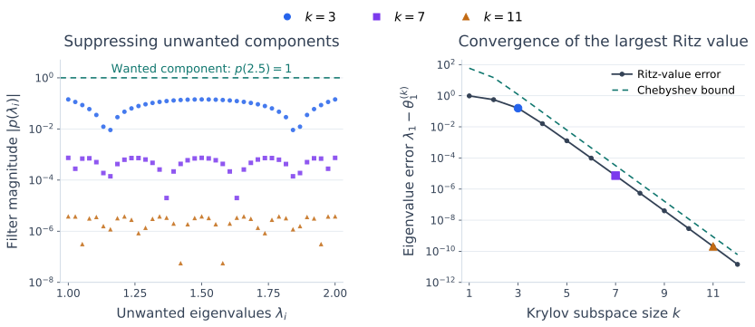

Convergence of the Lanczos Process#
In the Arnoldi analysis, a polynomial filter showed how a Krylov space can contain a good eigenvector approximation. Symmetry strengthens that connection: the largest Ritz value is the largest Rayleigh quotient available in the space. Thus one good direction is enough to give a good approximation to the largest eigenvalue.
We work in exact arithmetic with \(A=A^T\in\mathbb R^{n\times n}\), \(n\ge2\), and the eigenvalues ordered by value, not magnitude:
Let \(\theta_1^{(k)}\ge\cdots\ge\theta_k^{(k)}\) be the eigenvalues of the Lanczos projection \(T_k=Q_k^TAQ_k\). The superscript records the subspace size. All statements apply while the corresponding Lanczos bases have been constructed.
Why the Extreme Ritz Values Improve Monotonically#
For a nonzero vector \(z\), define the Rayleigh quotient
Every vector in the Krylov subspace has the form \(z=Q_ky\). Since \(Q_k\) has orthonormal columns,
In an orthonormal eigenvector basis, the Rayleigh quotient is a weighted average of the eigenvalues, with nonnegative weights summing to one. Its largest and smallest possible values are therefore the extreme eigenvalues. Applied to \(T_k\), this gives
Enlarging the space gives us more directions to test. Its maximum Rayleigh quotient can only increase, and its minimum can only decrease.
Theorem 36 (Monotonic Bounds for Extreme Ritz Values)
For consecutive Lanczos spaces \(\mathcal K_k\subseteq\mathcal K_{k+1}\),
Proof. The maximum over the larger subspace is at least the maximum over the smaller one, and neither can exceed the maximum \(\lambda_1\) over all of \(\mathbb R^n\). The same argument with minima gives the second line.
Monotonicity alone does not guarantee that a desired eigenvalue is visible from the starting vector. For example, if \(A=\operatorname{diag}(10,2,1)\) and \(q_1=e_2\), Lanczos stops immediately with the exact Ritz value \(2\); it never sees \(10\).
To obtain a rate for the largest eigenvalue, we therefore need a nonzero starting component in its eigenvector direction.
From a Polynomial Filter to an Eigenvalue Error Bound#
Let \(x_1,\ldots,x_n\) be an orthonormal eigenvector basis and write the unit starting vector as
Assume \(c_1\ne0\). Define the acute starting angle \(\phi_1\) by
As in the Arnoldi convergence analysis, choose a polynomial \(p\) of degree at most \(k-1\) with \(p(\lambda_1)=1\). Then
The wanted component is preserved, while small values at the unwanted eigenvalues suppress the others. Symmetry now lets us convert that suppression directly into a bound for the largest Ritz value.
Theorem 37 (Polynomial Bound for the Largest Ritz Value)
With the notation above, every real polynomial \(p\) of degree at most \(k-1\) satisfying \(p(\lambda_1)=1\) gives
Proof. Since \(\theta_1^{(k)}\) is the maximum Rayleigh quotient over \(\mathcal K_k\),
Orthogonality of the eigenvectors gives the exact expression
Bound each \(\lambda_1-\lambda_i\) by \(\lambda_1-\lambda_n\) and the denominator below by \(|c_1|^2\). The result follows from the definition of \(\tan^2\phi_1\).
The square is important. Suppressing unwanted components by a factor \(\epsilon\) reduces this eigenvalue error bound by \(\epsilon^2\). The starting angle determines the prefactor: a very small wanted component makes the bound less favorable.
An Explicit Rate from the Spectral Gap#
We need a polynomial equal to one at \(\lambda_1\) and small on the unwanted interval \([\lambda_n,\lambda_2]\). Chebyshev polynomials provide such a choice.
Write \(C_m\) for the degree-\(m\) Chebyshev polynomial of the first kind, to distinguish it from the matrix \(T_k\). It satisfies
so \(|C_m(t)|\le1\) on \([-1,1]\). For example, \(C_0(t)=1\), \(C_1(t)=t\), and \(C_2(t)=2t^2-1\).
Assume \(\lambda_1>\lambda_2>\lambda_n\). Map the unwanted interval to \([-1,1]\) using
The wanted eigenvalue maps outside that interval:
Thus \(\rho\) measures the gap above the unwanted eigenvalues relative to their spread. Use the normalized filter
It equals one at \(\lambda_1\). On the unwanted interval, its numerator has magnitude at most one, while its denominator grows with the degree.
Theorem 38 (Chebyshev Bound for the Largest Ritz Value)
Assume \(\lambda_1>\lambda_2>\lambda_n\) and \(c_1\ne0\). Then
Proof. The filter above satisfies \(p(\lambda_1)=1\) and
Substitute this into the polynomial bound.
For \(t>1\), the exact identity
shows that the denominator grows geometrically. A larger relative gap \(\rho\) gives a larger \(\tau\) and a faster-decaying bound. Small gaps or a poor starting direction can require more iterations. This is the largest-eigenvalue case of the classical Kaniel–Paige–Saad bounds; see Saad, Section 6.6.
The figure compares this bound with the actual error of the largest Ritz value. The Chebyshev polynomials provide trial filters for the analysis; Lanczos computes its Ritz values from \(T_k\).


Fig. 20 Lanczos convergence for a \(40\times40\) diagonal matrix with \(\lambda_1=2.5\) and the other \(39\) eigenvalues evenly spaced in \([1,2]\), so \(\rho=0.5\). The unit starting vector has equal eigenvector coefficients. Left: the normalized Chebyshev filters suppress unwanted components while preserving \(p(2.5)=1\). Right: the computed error \(\lambda_1-\theta_1^{(k)}\) (solid) and its Chebyshev bound (dashed). Matching colors mark the same subspace sizes. Both vertical axes are logarithmic. The calculation uses reorthogonalization to preserve the basis orthogonality.#
If \(\lambda_1>\lambda_2=\lambda_n\), the unwanted eigenvalues all coincide. The degree-one polynomial \(p(z)=(z-\lambda_n)/(\lambda_1-\lambda_n)\) removes them exactly, so the largest eigenvalue is obtained in at most two steps, assuming \(c_1\ne0\). If all eigenvalues coincide, every nonzero vector is already an eigenvector and one step suffices.
The smallest eigenvalue is treated in exactly the same way by applying the argument to \(-A\). Its convergence depends on the gap at the bottom of the spectrum and the starting component in that eigendirection.
Convergence of Interior Eigenvalues#
The monotonic structure is not limited to the two extremes. Because \(T_k\) is the leading principal submatrix of \(T_{k+1}\), Cauchy interlacing gives
In particular, for a fixed index \(j\), the \(j\)th largest Ritz value is nondecreasing as the space grows. An approximation selected as the value nearest a particular interior target may change its ordered index, so it need not follow one such monotone sequence.
Interior eigenvalues are often harder to isolate because the unwanted eigenvalues lie on both sides of the target. To approximate \(\lambda_i\), a polynomial filter can first remove the \(i-1\) higher Ritz directions. This uses \(i-1\) of the available \(k-1\) degrees, leaving \(k-i\) degrees to suppress the eigenvalues below \(\lambda_i\).
The resulting bound resembles the one for \(\lambda_1\), with a lower Chebyshev degree and an additional separation factor. We state it without proof.
Theorem 39 (Convergence Bound for an Interior Ritz Value)
For an interior index \(1<i<n\), take \(k\ge i\) and assume \(c_i\ne0\) and
Define the acute starting angle \(\phi_i\) by \(\cos\phi_i=|c_i|\), and put
Then
This is a Kaniel–Paige–Saad bound; see Saad, Theorem 6.4. The condition \(\theta_{i-1}^{(k)}>\lambda_i\) means that the \(i-1\) higher Ritz values have moved above the target. It also makes every denominator in \(\kappa_i^{(k)}\) positive.
The degree \(k-i\) is smaller than the degree \(k-1\) available for the largest eigenvalue. Each factor in \(\kappa_i^{(k)}\) exceeds one and can be large if a higher Ritz value is close to \(\lambda_i\). Together with the local gap \(\rho_i\) and the starting angle, these terms explain why interior eigenvalues often require more iterations. A favorable starting vector can still make an interior eigenpair accurate early.
For eigenvalues near the lower end of the spectrum, applying the same result to \(-A\) gives a bound measured from that end. It can be more favorable because fewer Ritz directions need to be removed.
To target eigenvalues near a chosen real value \(\sigma\), shift-and-invert applies Lanczos to \((A-\sigma I)^{-1}\), whose eigenvalues are \(1/(\lambda_i-\sigma)\). Eigenvalues near \(\sigma\) become large in magnitude. This requires solving linear systems with \(A-\sigma I\); the inverse is not formed explicitly, and \(\sigma\) must not be an eigenvalue.
A single starting vector also provides only one direction in each repeated eigenspace. Computing an entire eigenspace of dimension greater than one requires additional starting directions.
Residuals and Eigenvector Accuracy#
The convergence bounds explain the role of gaps and starting components, but use spectral information that is usually unknown. For stopping, use the residual derived for Arnoldi. Recall that the final remainder satisfies \(\|f_k\|_2=\beta_k\). If
then
The residual can be small even when \(\beta_k\) is not, because the last component \((y)_k\) may be small. This check uses quantities already available from Lanczos and the small eigenvalue problem.
Since \(A\) is symmetric, the normal-matrix case of Theorem 35 gives
Thus the residual bounds the distance to some eigenvalue. Identifying which eigenvalue it approximates requires additional spectral information.
For a particular simple eigenvalue \(\lambda_j\), separation also controls the eigenvector accuracy. Put
For the unit Ritz vector \(u\),
To see this, expand \(u=\sum_i a_ix_i\) in the orthonormal eigenvector basis:
The last sum is \(\sin^2\angle(u,x_j)\). Once \(\theta\) is close to a simple, separated eigenvalue \(\lambda_j\), a small residual therefore also gives an accurate eigenvector. For a tight cluster, the associated invariant subspace can be a more useful target than an individual direction.
These guarantees assume an orthonormal Lanczos basis. In floating-point arithmetic, use reorthogonalization when needed and explicitly check the residual of a normalized Ritz vector before accepting it.
Symmetric and Nonsymmetric Convergence#
For symmetric matrices, real eigenvalues and an orthonormal eigenvector basis give Lanczos a clear variational structure. The ordered Ritz values obey interlacing and monotonicity, while the polynomial bounds quantify the effects of spectral gaps and the starting direction. Well-separated extreme eigenvalues are often approximated quickly; small gaps or weak starting components can still slow convergence.
For general nonsymmetric matrices, Arnoldi has no corresponding real ordering or variational bounds. Polynomial filtering still explains the approximations available in the Krylov space, but the eigenvalues may occupy a region of the complex plane. For diagonalizable \(A=X\Lambda X^{-1}\), nonnormality can make the eigenvector matrix \(X\) poorly conditioned. The factor \(\kappa_2(X)\) then weakens the eigenvalue error guarantee from a small residual, as shown in Theorem 35. Convergence therefore depends on eigenvector geometry as well as eigenvalue locations, making eigenvalue gaps alone less predictive.